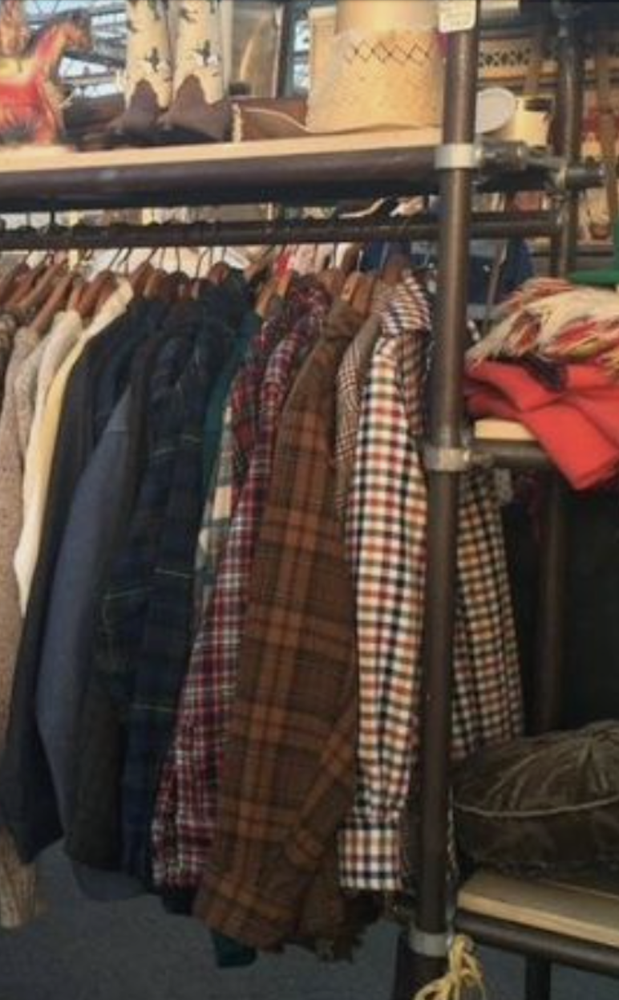
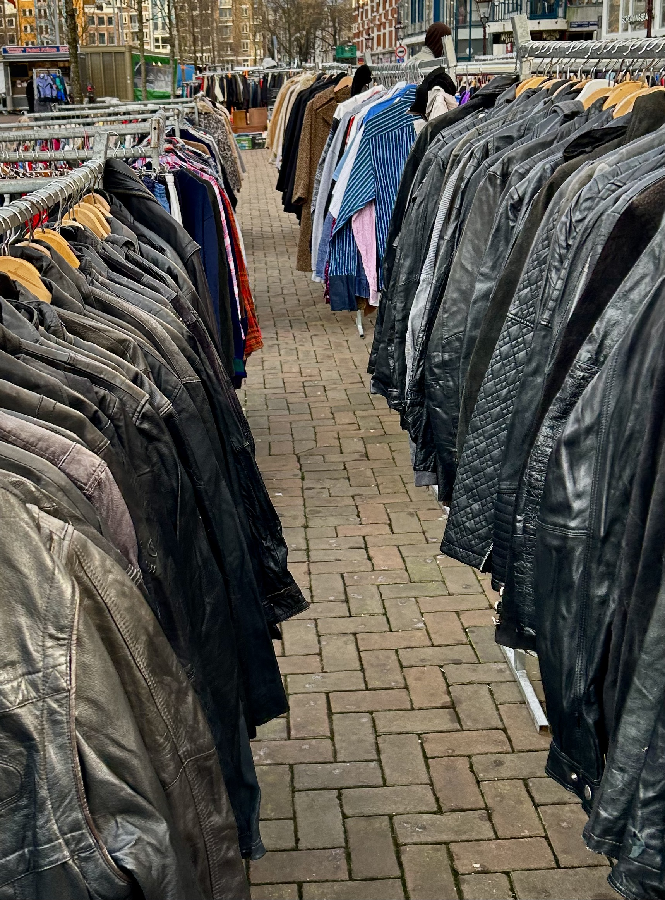
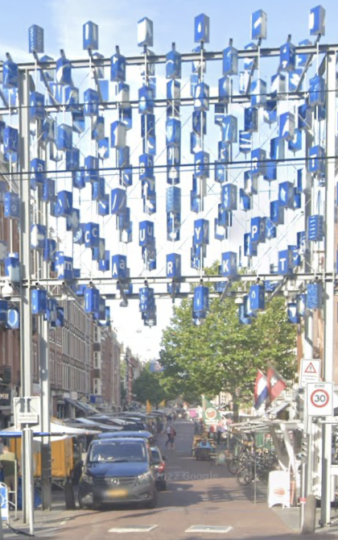

markten

IJ hallen
IJ-hallen is de grootste en sfeervolste vlooienmarkt van Europa gelegen op het NSDM terrein van Amsterdam. Door de grootte van de markt komen vraag en aanbod uitstekend bij elkaar en is de kans van slagen zeer groot. Ook worden er elke markt, tegen zeer lage prijzen, unieke producten op het gebied van woninginrichting en kleding aangeboden. Een aanrader voor de ijhallen is wel vroeg in de dag gaan, want het kan erg druk worden.
Waterlooplein
Het Waterlooplein is de oudste vlooienmarkt van Nederland. Honderddrieendertig jaar geleden opgericht, zes dagen per week open en met zo een driehonderd kramen, een van de leukste en gezelligste plekken in hartje Amsterdam. Van vintage fototoestellen, tot tweedehands boeken, tot sieraden en de laatste mode voor weinig geld. Op waterlooplein vind je tovallig ook een van de winkels van kilostore waar ik het eerder over had.
Albert Cuyp
De Albert Cuypmarkt is een bekende markt in Amsterdam, gelegen in de wijk De Pijp. Deze markt is vernoemd naar de schilder Albert Cuyp en staat bekend om zijn diverse aanbod van producten, waaronder verse voedingsmiddelen, kleding, bloemen, en andere goederen. De markt is dagelijks geopend, behalve op zondag. Het is een populaire bestemming zowel voor de lokale bevolking als toeristen.